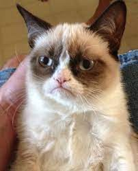
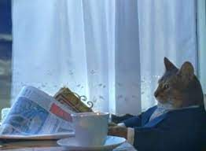
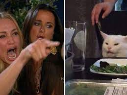

A cat meme is an internet meme that features one or more images or videos of cats, often accompanied by humorous captions or text overlays. These memes have become wildly popular on social media platforms, and they typically aim to be funny, relatable, or cute. Cat memes often play on common stereotypes and behaviors associated with cats, such as their curiosity, aloofness, and playful nature.
Grumpy Car Meme
I Should Buy a Boat Meme
Woman Yelling at a Cat Meme
Bongo Cat Meme
Thumbs Up Crying Cat Meme
Business Cat Meme
Cat Standing in the Snow Meme
Loading Cat Meme
Cursed Cat Meme
Coughing Cat Mem